一般神器・+10
- 最大 HP +10,000
- 免疫度 +4
- 貫穿力 +3
GRANADO ESPADA
開發者筆記
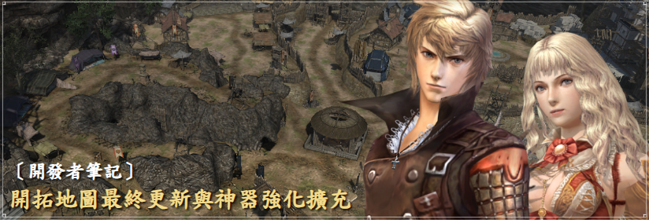
DEVELOPER'S NOTE · 2026.08.28
開拓地圖迎來最終篇，並將神器強化系統擴充至一般、進化與稀有神器。
大家好，我是開發團隊的 Jeokdan。
透過這次更新，開拓地圖終於迎來最終篇！遊戲中的所有角色都將列入各任務的可進場名單，僅靠開拓地圖就能取得所有角色卡片。
隨著開拓地圖最終更新，原本僅適用於「角色」神器的強化系統，也將擴充至一般、進化與稀有神器。那麼，現在就一起來看看吧！
PIONEER MISSIONS
9 月第一次更新將新增 3 種開拓地圖任務，地區分別為卡斯提亞、普魯里奧及巨人群島。
與既有開拓地圖任務相同，6 種基本創建角色不受每日進場次數限制，可自由參加。「開拓地圖碎片箱子召喚石」也會加入上述 3 個新地區的碎片箱子。
開拓地圖任務依各任務性質，將可進場角色分為近戰、魔法與射擊類型。本次最終更新會讓尚未配置的角色，都能加入適合自己的任務。
至此，遊戲中的所有角色都能參加至少 1 種開拓地圖任務。無論正在培養哪位角色，都可以參與；先前因為沒有可進場角色而錯過任務的玩家，也請放心挑戰！
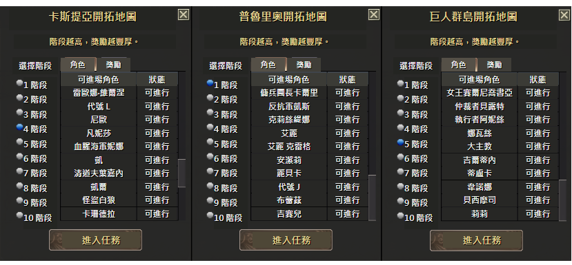
每項任務都準備了不同機制。透過下方畫面，可先確認三個地區的任務氣氛與玩法提示。
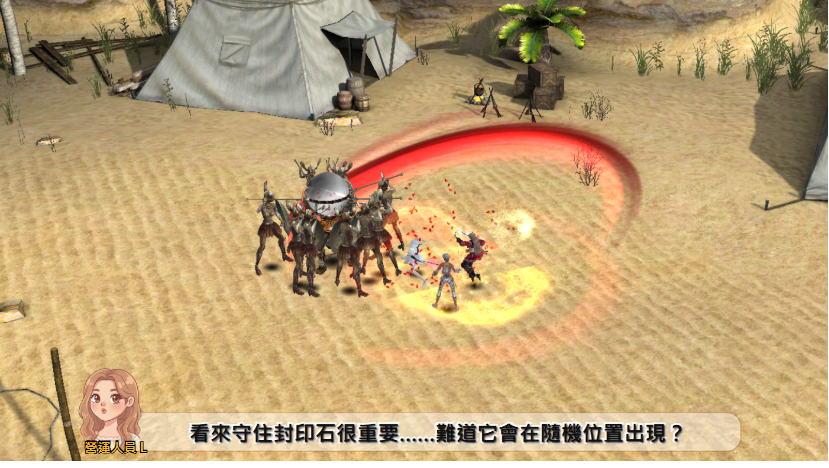
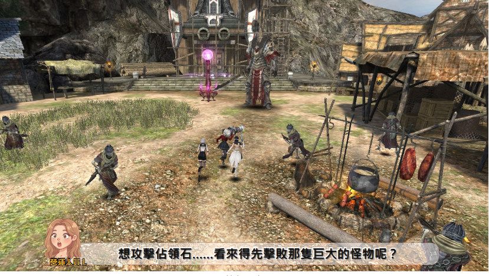
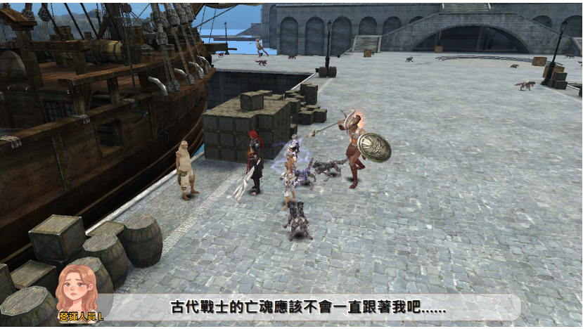
MISSION REWARD
本次新增任務將發放「純淨水」作為獎勵。此道具無法交易，是製作「精製神器研磨劑」的核心材料。
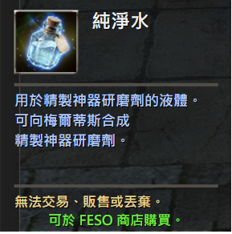
| 階段 | 1 | 2 | 3 | 4 | 5 | 6 | 7 | 8 | 9 | 10 |
|---|---|---|---|---|---|---|---|---|---|---|
| 數量 | 2 | 4 | 6 | 10 | 14 | 20 | 26 | 34 | 42 | 50 |
ARTIFACT ENHANCEMENT
以往強化系統僅適用於「角色」神器，其他神器的實用性便隨著角色成長而逐漸降低。
本次將強化範圍擴及一般、進化與稀有神器。各位可依目前的成長階段強化持有的神器，繼續使用，也能擁有更多神器選擇。
GENERAL & ADVANCED
一般與進化神器沿用「神器研磨劑」作為強化材料，最高可強化至 +10。
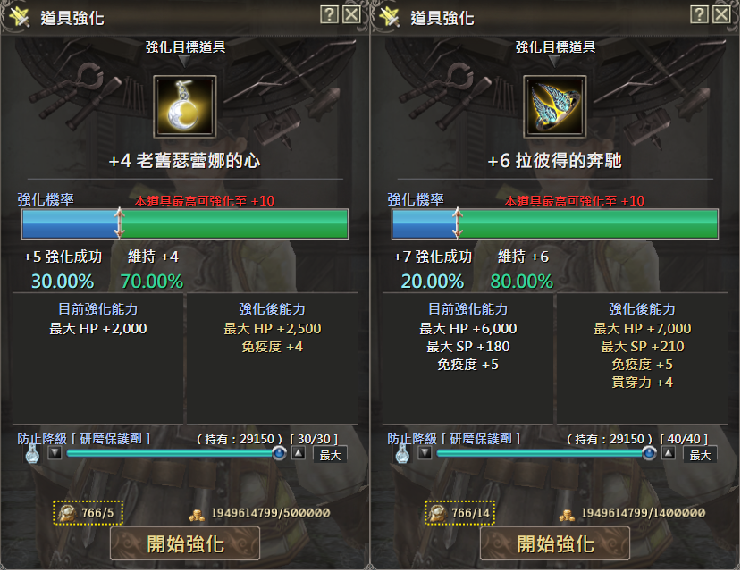
RARE ARTIFACT
稀有神器須使用「精製神器研磨劑」強化。強化失敗時可防止強化階段下降的「研磨保護劑」，仍可照常使用。
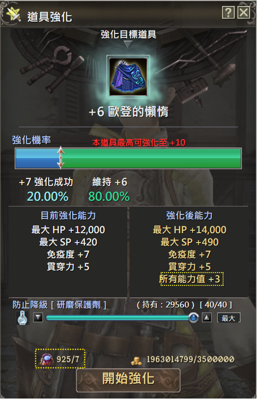
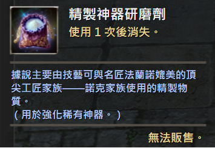
CRAFTING
「精製神器研磨劑」可用「純淨水」與「神器研磨劑」合成，請透過梅爾蒂斯的道具合成功能製作。
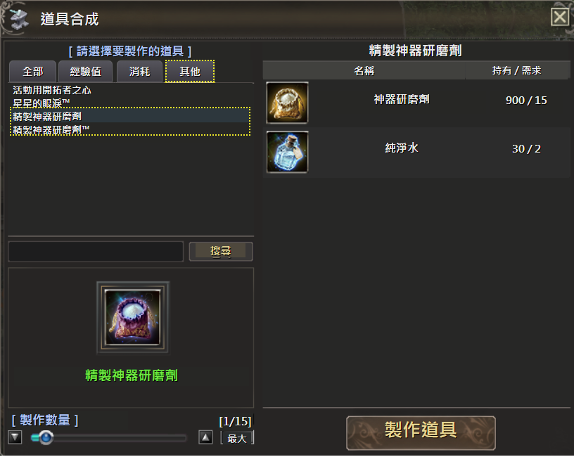
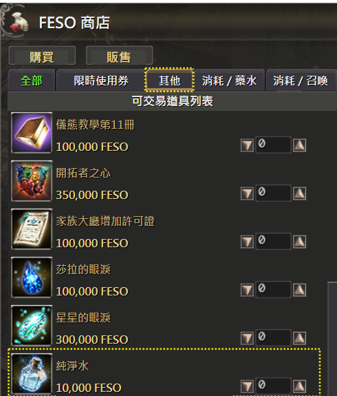
合成的核心材料「純淨水」，可從前述 3 個新開拓地圖任務取得，也能在 FESO 商店以 10,000 FESO 購買。
CLOSING
隨著本次最終更新，開拓地圖的全部 9 個地區將完整開放。感謝各位開拓家族長期以來的支持。我們也正依計畫準備里昂塔提歐紀錄的第二次更新，以及先前預告的任務改版。
各位寶貴的回饋一直是開發團隊的重要動力。我們將持續努力，帶來更多精彩有趣的內容。謝謝大家。